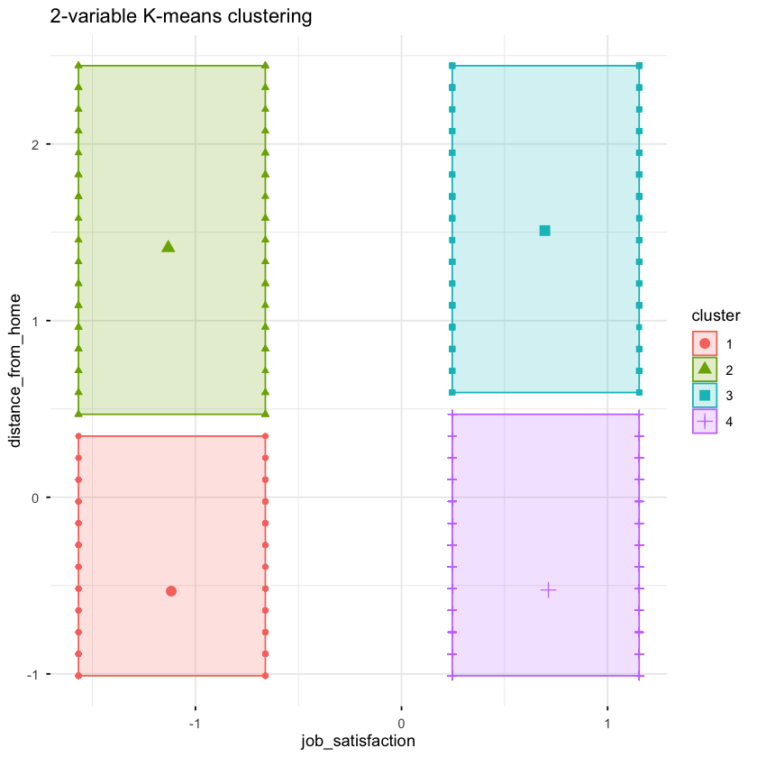
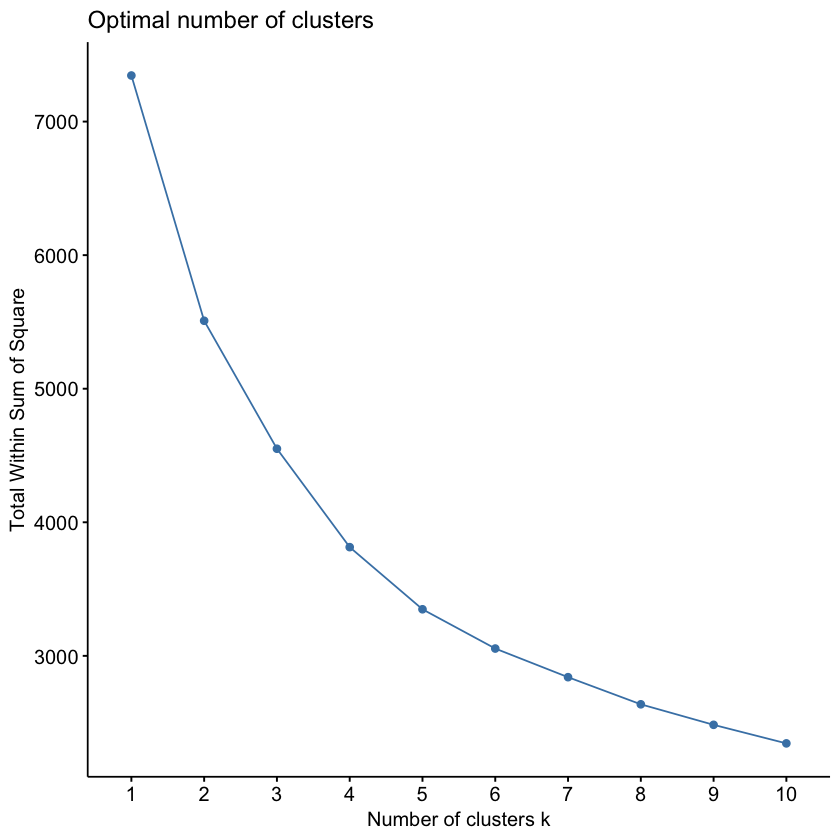
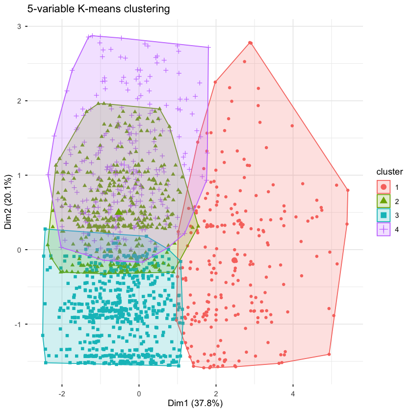

Tutorial Class 07 Set 01 - Descriptive Analytics in HRM¶
Learning Goals¶
By the end of this tutorial, you should be able to:
- Explain why employee attrition matters as a business analytics problem and why segmentation can help an analytics team explore different attrition profiles.
- Construct a simple rule-of-thumb employee segmentation using fixed thresholds and interpret attrition patterns across the resulting groups.
- Explain what K-means clustering is trying to achieve and compare its strengths and limitations with a hand-built rule-of-thumb segmentation.
- Prepare numeric variables for K-means clustering by selecting, scaling, and checking a preprocessing workflow in R.
- Implement and interpret K-means clustering models using both a simple two-variable setup and a richer five-variable employee profile.
- Evaluate a defensible choice of the number of clusters using the elbow method and justify that choice in words.
- Communicate segmentation results in a short analytics team memo, including the main patterns, implications, and limitations of the analysis.
The Business Challenge¶
The Topic: Why are employees leaving, and can segmentation help us understand different attrition profiles?¶
Every time an employee leaves, companies incur real costs through recruitment, training, disruption to teams, and lost experience. For an HR analytics team, an important first step is to understand whether different types of employees show different patterns of attrition.
In this tutorial, we use segmentation to explore that question. We begin with a simple rule-of-thumb grouping based on a small number of variables, and then compare it to K-means clustering, a more data-driven way of grouping employees with similar characteristics. This helps us move beyond one-off cases and identify broader employee profiles, which is a common task in descriptive analytics.
Our goal is not to build a formal prediction model or identify the causes of attrition. Instead, the goal is to explore whether different segmentation approaches reveal useful patterns that an analytics team could investigate further.
The Data: HR Analytics Data¶
We will work with an anonymised dataset from a company’s HR department. It contains information on 1,470 employees, including:
- Personal characteristics:
age,gender,marital_status,distance_from_home - Job-related features:
job_satisfaction,monthly_income,years_at_company,department - Outcome:
attrition– whether the employee has left the company
This gives us a useful set of variables for exploring whether different employee groups differ in meaningful ways.
The Method: Rule-of-Thumb and K-Means Segmentation¶
Our goal is to segment employees into groups with similar profiles and examine whether attrition differs across those groups. To do this, we will:
- create a simple rule-of-thumb segmentation using two variables
- compare it to K-means clustering on those same variables
- build a richer K-means model using five scaled numeric variables
- use the elbow method to help choose a reasonable number of clusters
- interpret the resulting clusters using their average characteristics and attrition rates
This allows us to compare a simple hand-built segmentation to a richer data-driven one, and to ask whether the more flexible approach produces more useful insight.
Loading the R packages and data¶
Here’s the packages we will need to complete the exercises:
library(tidyverse) # data manipulation and plotting
library(janitor) # cleaning column names
library(recipes) # For data preprocessing
library(cluster) # clustering
library(factoextra) # k-means visualization and cluster evaluation
library(broom) # tidy output of clustering results
Let’s load the data that we will use today:
df <-
read_csv("data/hr_attrition.csv") |>
# tidy up column names to snake_case
clean_names()
Prepare these Exercises before Class¶
Prepare these exercises before coming to class. Plan to spend 30 minutes on these exercises.
Exercise 1: The What and Why of employee attrition¶
Employee attrition refers to people leaving the company — either voluntarily (resignation) or involuntarily (termination). While some turnover is normal, high attrition can signal deeper issues.
(a)
What kinds of consequences might high attrition have for a business?
(b)
What might cause employees to leave?
(c)
Why might an analytics team want to group employees into segments when studying attrition, rather than looking only at employees one by one?
Solution
(a)
What kinds of consequences might high attrition have for a business?
- Increased costs: Hiring and training new employees takes time and money.
- Loss of knowledge: Experienced employees may take valuable firm-specific knowledge with them.
- Disruption to teams: Turnover can interrupt workflows and reduce team stability.
- Reduced productivity: New hires may need time to become fully effective.
- Morale and reputation effects: High attrition can lower morale and may signal a poor work environment.
(b)
What are some possible reasons employees might leave?
- Job dissatisfaction: Employees may be unhappy with their role, workload, manager, or workplace culture.
- Limited growth opportunities: Some employees may leave if they feel stuck or underutilized.
- Compensation and benefits: Employees may move for better pay or conditions elsewhere.
- Commute or location issues: Long travel times may make a job less sustainable.
- Personal reasons: Family needs, health, or career changes may also matter.
(c)
Why might an analytics team want to group employees into segments when studying attrition, rather than looking only at employees one by one?
- Pattern finding: Segments can reveal broader employee profiles with different attrition patterns.
- Clearer interpretation: Grouping can make it easier to describe which types of employees are more likely to leave.
- Better actionability: Firms may be able to design different retention responses for different employee groups.
- Descriptive insight before prediction: Segmentation helps analysts understand the structure of the workforce before moving to more formal predictive tools.
Exercise 2: A Simple Rule-of-Thumb Employee Segmentation¶
Suppose your analytics team wants to create a quick first-pass classification of employees using two variables:
job_satisfactiondistance_from_home
For this exercise, define:
- lower satisfaction as a score below 2
- longer commute as living 10 km or more from work
This gives four possible employee groups:
- Higher satisfaction, shorter commute
- Higher satisfaction, longer commute
- Lower satisfaction, shorter commute
- Lower satisfaction, longer commute
(a)
Why might an analytics team begin with a simple rule-of-thumb segmentation before trying a more data-driven method?
(b)
Complete the code below to classify each employee into one of the four segments.
df_rule <-
df |>
mutate(
rule_segment = case_when(
YOUR_CONDITION ~ "Higher satisfaction, shorter commute",
YOUR_CONDITION ~ "Higher satisfaction, longer commute",
YOUR_CONDITION ~ "Lower satisfaction, shorter commute",
.default = "Lower satisfaction, longer commute"
)
)
(c)
For each segment, calculate:
- the number of employees
- the attrition rate
# Write your answer here
(d)
Which segment or segments appear to have the highest attrition?
(e)
What are the advantages of this rule-of-thumb approach for an analytics team? What kinds of patterns might it fail to capture?
Solution
(a)
Why might an analytics team begin with a simple rule-of-thumb segmentation before trying a more data-driven method?
- Easy to understand: Simple rules are transparent and easy to explain to others.
- Fast to implement: Analysts can create an initial segmentation quickly.
- Useful benchmark: A hand-built rule gives a baseline that can later be compared to more data-driven methods.
- Business intuition: The chosen variables may reflect concerns that managers already care about.
(b)
Complete the code below to classify each employee into one of the four segments.
df_rule <-
df |>
mutate(
rule_segment = case_when(
job_satisfaction >= 2 & distance_from_home < 10 ~ "Higher satisfaction, shorter commute",
job_satisfaction >= 2 & distance_from_home >= 10 ~ "Higher satisfaction, longer commute",
job_satisfaction < 2 & distance_from_home < 10 ~ "Lower satisfaction, shorter commute",
.default = "Lower satisfaction, longer commute"
)
)
(c)
For each segment, calculate the number of employees and the attrition rate.
df_rule |>
group_by(rule_segment) |>
summarise(
n_employees = n(),
attrition_rate = mean(attrition == "Yes")
)
| rule_segment <chr> | n_employees <int> | attrition_rate <dbl> |
|--------------------------------------|-------------------|----------------------|
| Higher satisfaction, longer commute | 426 | 0.1784038 |
| Higher satisfaction, shorter commute | 755 | 0.1258278 |
| Lower satisfaction, longer commute | 104 | 0.2692308 |
| Lower satisfaction, shorter commute | 185 | 0.2054054 |
(d)
Which segment or segments appear to have the highest attrition?
A strong answer should identify the segment or segments with the highest attrition rate based on the summary table, rather than relying on counts alone.
(e)
What are the advantages of this rule-of-thumb approach for an analytics team? What kinds of patterns might it fail to capture?
- Advantages: The approach is simple, transparent, quick to implement, and easy to communicate.
- What it might miss: It depends heavily on the chosen thresholds, may ignore more subtle combinations of variables, and may fail to capture patterns that are not well described by simple cutoffs.
- Big picture: This is useful as a first-pass segmentation, but it may be cruder than a more data-driven clustering approach.
Exercise 3: What Is K-Means Clustering?¶
In Exercise 2, you created a simple rule-of-thumb segmentation by assigning employees to groups using fixed cutoffs.
In later exercises, you will explore a different approach called K-means clustering.
(a)
Explain in your own words what K-means clustering is trying to achieve.
(b)
Explain how K-means clustering differs from the rule-of-thumb segmentation you created in Exercise 2.
(c)
What is one advantage of using a rule-of-thumb segmentation instead of K-means clustering?
(d)
What is one advantage of using K-means clustering instead of a rule-of-thumb segmentation?
(e)
In K-means clustering, which parts of the analysis are chosen by the analyst, and which parts are carried out automatically by the algorithm?
(f)
Suppose an analytics team wants to use K-means clustering with variables such as job_satisfaction, distance_from_home, and monthly_income. Explain why it is important that these variables are numeric.
(g)
Explain why it is usually important to scale variables before running K-means clustering.
Solution
(a)
Explain in your own words what K-means clustering is trying to achieve.
K-means clustering divides observations into a chosen number of groups so that observations within the same group are similar to one another, while observations in different groups are less similar.
For the analytically inclined: A more detailed explanation is that K-means begins with a chosen number of cluster centres, called centroids. Each observation is assigned to the nearest centroid. The centroid of each cluster is then recalculated, and the process repeats until the assignments become stable.
(b)
Explain how K-means clustering differs from the rule-of-thumb segmentation you created in Exercise 2.
Rule-of-thumb segmentation uses fixed cutoffs chosen by the analyst in advance. K-means clustering does not require the analyst to define the groups directly. Instead, it forms groups based on similarity in the data using the variables provided.
(c)
What is one advantage of using a rule-of-thumb segmentation instead of K-means clustering?
A rule-of-thumb segmentation is easy to understand, explain, and communicate. Because the grouping rule is explicit, it is often easier to justify to non-technical audiences.
(d)
What is one advantage of using K-means clustering instead of a rule-of-thumb segmentation?
K-means clustering can uncover patterns in the data that a simple hand-built rule may miss. It allows the grouping to be shaped by similarity across the variables rather than by fixed analyst-chosen cutoffs alone.
(e)
In K-means clustering, which parts of the analysis are chosen by the analyst, and which parts are carried out automatically by the algorithm?
The analyst chooses which variables to include, how the data are prepared, and the number of clusters k. The algorithm then uses those inputs to assign observations to clusters and update the cluster centres until the grouping becomes stable.
(f)
Suppose an analytics team wants to use K-means clustering with variables such as job_satisfaction, distance_from_home, and monthly_income. Explain why it is important that these variables are numeric.
K-means clustering works by comparing observations using numerical distance. To calculate how close or far apart two employees are, the method needs each observation to be represented as numbers. Numeric variables can be placed in a numerical feature space, which allows the algorithm to measure similarity across employees.
If a variable is stored as text or as a category label, K-means cannot directly interpret the difference between its values as numerical distance. That is why K-means is typically used with numeric variables, or with categorical variables that have first been converted into a suitable numeric form.
(g)
Explain why it is usually important to scale variables before running K-means clustering.
Scaling is important because K-means is distance-based. If one variable has a much larger numerical range than another, it can dominate the distance calculation even if it is not conceptually more important. For example, monthly_income may vary by thousands of dollars, while job_satisfaction may vary only between 1 and 4.
Scaling puts variables onto a more comparable footing, so the clustering is driven more by relative patterns across variables rather than by whichever variable happens to be measured on the biggest scale.
In-Class Exercises¶
You will discuss these exercises in class with your peers in small groups and with your tutor. These exercises build from the exercises you have prepared above, you will get the most value from the class if you have completed those above before coming to class.
Exercise 4: Preparing the Data for K-Means Clustering¶
In the remaining exercises, we will use the following five numeric variables to build and compare K-means clustering models:
job_satisfactionmonthly_incomeyears_at_companydistance_from_homeage
In this exercise, we prepare these five variables for the clustering analysis that follows.
(a)
Create a dataset that contains the five variables listed above.
df_kmeans <-
df |>
select(
job_satisfaction,
monthly_income,
years_at_company,
YOUR_CODE,
YOUR_CODE
)
(b)
Complete the code below to create a recipe for df_kmeans and add a step that normalises all numeric predictors.
rec <-
YOUR_CODE(~ ., data = df_kmeans) |>
YOUR_CODE(all_numeric_predictors())
(c)
Explain what the code in part (b) is doing.
(d)
Complete the code below to implement the preprocessing steps from the recipe in part (b) and apply them to the data.
df_scaled <-
rec |>
YOUR_CODE() |>
YOUR_CODE(new_data = NULL)
(e)
Explain what the two functions you used in part (d) are doing.
(f)
Run the code below to verify that the preprocessing achieves the desired result. What do you notice about the means and standard deviations?
df_scaled |>
summarise(
across(
everything(),
list(mean = mean, sd = sd)
)
)
Solution
(a)
The code below creates a smaller dataset containing only the five variables we will use. Complete the select() step.
df_kmeans <-
df |>
select(
job_satisfaction,
monthly_income,
years_at_company,
distance_from_home,
age
)
(b)
Complete the code below to create a recipe for df_kmeans and add a step that normalises all numeric predictors.
rec <-
recipe(~ ., data = df_kmeans) |>
step_normalize(all_numeric_predictors())
(c)
Explain in plain language what the code in part (b) is doing.
This code creates a preprocessing plan for the variables in df_kmeans and adds a step that will normalise all numeric predictors so they are on a comparable scale.
(d)
Complete the code below to implement the preprocessing steps from the recipe in part (b) and apply them to the data.
df_scaled <-
rec |>
prep() |>
bake(new_data = NULL)
(e)
Explain in plain language what the two functions you used in part (d) are doing.
prep() works out what is needed to carry out the preprocessing steps in the recipe. In this case, it calculates the information needed to normalise each variable. bake(new_data = NULL) then applies those prepared steps to the data and returns the processed dataset.
(f)
Run the code below to verify that the preprocessing achieves the desired result. What do you notice about the means and standard deviations?
The means are now close to 0 and the standard deviations are close to 1 for each variable. This indicates that the variables have been normalised successfully.
df_scaled |>
summarise(
across(
everything(),
list(mean = mean, sd = sd)
)
)
| job_satisfaction_mean <dbl> | job_satisfaction_sd <dbl> | monthly_income_mean <dbl> | monthly_income_sd <dbl> | years_at_company_mean <dbl> | years_at_company_sd <dbl> | distance_from_home_mean <dbl> | distance_from_home_sd <dbl> | age_mean <dbl> | age_sd <dbl> |
|-----------------------------|---------------------------|---------------------------|-------------------------|-----------------------------|---------------------------|-------------------------------|-----------------------------|----------------|--------------|
| -1.260707e-16 | 1 | -6.755745e-17 | 1 | 4.437116e-17 | 1 | 1.816385e-17 | 1 | -2.514995e-17 | 1 |
Exercise 5: Comparing Rule-of-Thumb Segmentation to K-Means¶
In Exercise 2, you created four employee groups using simple rules based on job_satisfaction and distance_from_home.
Now we will use K-means clustering on those same two variables and compare the result.
(a)
Create a new dataset called df_scaled_small that keeps only the scaled versions of:
job_satisfactiondistance_from_home
from df_scaled.
df_scaled_small <-
df_scaled |>
select(YOUR_CODE, YOUR_CODE)
(b)
Run K-means clustering on df_scaled_small using 4 clusters.
set.seed(123)
kmeans_small <-
kmeans(
YOUR_CODE,
centers = YOUR_CODE,
nstart = 10
)
(c)
Use the code below to visualise the clustering result.
fviz_cluster(
kmeans_small,
data = df_scaled_small,
ggtheme = theme_minimal(),
main = "2-variable K-means clustering"
)
(d)
What do you notice about the shape of the clusters? Do they look very different from the rule-of-thumb groups in Exercise 2?
(e)
The code below combines the original employee data with the K-means cluster assignments.
Using df_compare, calculate the number of employees and the attrition rate in each cluster.
df_compare <-
df |>
select(attrition, job_satisfaction, distance_from_home) |>
mutate(cluster = as.factor(kmeans_small$cluster))
df_compare |>
YOUR_CODE_HERE
(f) Compared with the rule-of-thumb segmentation, did K-means appear to add much in this two-variable setting? Explain briefly.
Solution
(a)
Create a new dataset called df_scaled_small that keeps only the scaled versions of job_satisfaction and distance_from_home from df_scaled.
df_scaled_small <-
df_scaled |>
select(job_satisfaction, distance_from_home)
(b)
Run K-means clustering on df_scaled_small using 4 clusters.
set.seed(123)
kmeans_small <-
kmeans(
df_scaled_small,
centers = 4,
nstart = 10
)
(c)
Use the code below to visualise the clustering result.
fviz_cluster(
kmeans_small,
data = df_scaled_small,
geom = "point",
ggtheme = theme_minimal(),
main = "2-variable K-means clustering"
)
(d)
What do you notice about the shape of the clusters? Do they look very different from the rule-of-thumb groups in Exercise 2?
A strong answer should note that the clusters may look fairly similar to the earlier four-group rule-based segmentation. In a simple two-variable setting, K-means may not add dramatically different structure.
(e)
Using df_compare, calculate the number of employees and the attrition rate in each cluster.
df_compare <-
df |>
select(attrition, job_satisfaction, distance_from_home) |>
mutate(cluster = as.factor(kmeans_small$cluster))
df_compare |>
group_by(cluster) |>
summarise(
n_employees = n(),
attrition_rate = mean(attrition == "Yes"),
job_sat = mean(job_satisfaction),
distance = mean(distance_from_home)
)
| cluster <fct> | n_employees <int> | attrition_rate <dbl> | job_sat <dbl> | distance <dbl> |
|---------------|-------------------|----------------------|---------------|----------------|
| 1 | 415 | 0.1710843 | 1.496386 | 4.884337 |
| 2 | 154 | 0.2662338 | 1.480519 | 20.636364 |
| 3 | 234 | 0.1709402 | 3.495726 | 21.431624 |
| 4 | 667 | 0.1274363 | 3.514243 | 4.937031 |
(f)
Compared with the rule-of-thumb segmentation, did K-means appear to add much in this two-variable setting? Explain briefly.
The four clusters line up closely with the four combinations of lower versus higher job satisfaction and shorter versus longer commute distance. For example, clusters 1 and 2 both have lower average job satisfaction, while clusters 3 and 4 both have higher average job satisfaction. Clusters 2 and 3 both have longer average commute distances, while clusters 1 and 4 have shorter average commute distances.
The attrition rates also follow a familiar pattern. The highest attrition appears in the cluster with lower satisfaction and longer commute (cluster 2), while the lowest attrition appears in the cluster with higher satisfaction and shorter commute (cluster 4). The other two clusters sit in between. This suggests that in a two-variable setting, K-means may not add dramatically different insight beyond what a transparent rule-of-thumb segmentation already captured.
That does not mean K-means is useless. Rather, it shows that when the structure is simple and the variables are few, a hand-built segmentation can already do a reasonable job of describing the main pattern in the data.
Exercise 6: Building a Richer K-Means Model¶
Your analytics team now wants to build a richer clustering model using all five scaled variables in df_scaled:
job_satisfactionmonthly_incomeyears_at_companydistance_from_homeage
One challenge remains: we still need to choose a value for k, the number of clusters.
A colleague suggests using the elbow method as a starting point.
(a)
Explain what the elbow method is trying to do.
(b)
Run the code below to create an elbow plot for K-means clustering on df_scaled.
fviz_nbclust(
df_scaled,
kmeans,
method = "wss",
k.max = 10,
nstart = 10
)
(c)
Based on the elbow plot, what value of k would you choose? Briefly explain your answer.
(d)
Run K-means clustering on df_scaled using your chosen value of k.
set.seed(123)
kmeans_full <-
kmeans(
YOUR_CODE,
centers = YOUR_CODE,
nstart = 10
)
(e)
Use the code below to visualise the clustering result.
fviz_cluster(
kmeans_full,
geom = "point",
data = df_scaled,
ggtheme = theme_minimal(),
main = "5-variable K-means clustering"
)

(f)
What can the plot in (e) tell you about the clustering result? What can it not tell you on its own?
(g)
The code below combines the original employee data with the cluster assignments from your 5-variable K-means model.
Using df_compare_full, calculate:
- the number of employees in each cluster
- the attrition rate in each cluster
- the average value of each clustering variable in each cluster
df_compare_full <-
df |>
select(
attrition,
job_satisfaction,
monthly_income,
years_at_company,
distance_from_home,
age
) |>
mutate(cluster = as.factor(kmeans_full$cluster))
df_compare_full |>
YOUR_CODE_HERE
Solution
(a)
A colleague suggests using the elbow method. Explain what the elbow method is trying to do.
The elbow method helps analysts choose a reasonable number of clusters by plotting how within-cluster variation changes as k increases. As more clusters are added, this variation will always fall, but after a certain point the improvement becomes much smaller. The analyst then looks for the “elbow” in the plot, where adding another cluster no longer gives a large reduction in within-cluster variation.
(b)
Run the code below to create an elbow plot for K-means clustering on df_scaled.
fviz_nbclust(
df_scaled,
kmeans,
method = "wss",
k.max = 10,
nstart = 10
)

(c)
Based on the elbow plot, what value of k would you choose? Briefly explain your answer.
A strong answer should choose a defensible value of k and justify it using the shape of the elbow plot. The key idea is that improvements become smaller after a certain point, even if the elbow is not perfectly sharp. We went with k = 4
(d)
Run K-means clustering on df_scaled using your chosen value of k.
set.seed(123)
kmeans_full <-
kmeans(
df_scaled,
centers = 4,
nstart = 10
)
(e)
Use the code below to visualise the clustering result.
Students should produce the cluster plot and use it as one input into interpretation, alongside the cluster summaries.
fviz_cluster(
kmeans_full,
data = df_scaled,
geom = "point",
ggtheme = theme_minimal(),
main = "5-variable K-means clustering"
)

(f)
What can this plot tell you about the clustering result? What can it not tell you on its own?
The plot can give a broad sense of whether clusters appear reasonably separated, but it cannot fully describe the cluster profiles in a five-variable setting. For that, we still need summary statistics for each cluster.
(g)
Using df_compare_full, calculate the number of employees in each cluster, the attrition rate in each cluster, and the average value of each clustering variable in each cluster.
Follow the same logic as in Exercise 5, using group_by(cluster) and summarise() to calculate cluster sizes, attrition rates, and means for the five variables.
df_compare_full <-
df |>
select(
attrition,
job_satisfaction,
monthly_income,
years_at_company,
distance_from_home,
age
) |>
mutate(cluster = as.factor(kmeans_full$cluster))
df_compare_full |>
group_by(cluster) |>
summarise(
n_employees = n(),
attrition_rate = mean(attrition == "Yes"),
job_sat = mean(job_satisfaction),
income = mean(monthly_income),
years = mean(years_at_company),
distance = mean(distance_from_home),
age = mean(age)
)
| cluster <fct> | n_employees <int> | attrition_rate <dbl> | job_sat <dbl> | income <dbl> | years <dbl> | distance <dbl> | age <dbl> |
|---------------|-------------------|----------------------|---------------|--------------|-------------|----------------|-----------|
| 1 | 237 | 0.06751055 | 2.717300 | 14988.000 | 14.877637 | 7.662447 | 47.51477 |
| 2 | 387 | 0.19379845 | 1.457364 | 4669.447 | 5.348837 | 6.147287 | 34.42119 |
| 3 | 567 | 0.14285714 | 3.537919 | 4830.538 | 5.511464 | 5.372134 | 34.86420 |
| 4 | 279 | 0.23297491 | 2.856631 | 5237.140 | 5.666667 | 22.480287 | 35.58423 |
Exercise 7: Communicating Your Results in an Analytics Team Memo¶
You have now explored three ways to segment employees:
- a simple rule-of-thumb segmentation
- a 2-variable K-means model
- a richer 5-variable K-means model
Your task is to write a short memo for an analytics team meeting. The goal is to help the team decide which approach produced the most useful insight into employee attrition patterns.
Writing Hints
- Use the “Write Like an Amazonian” tips to guide your writing.
- A strong memo should compare the approaches, not just describe the final one.
- Focus on the analytical takeaway: what did each method reveal, and what did the richer model add?
- Keep the writing clear and direct. Do not simply restate the code you ran.
Suggested Memo Structure - Use the outline below and provide 2–3 bullet points under each subheading.
-
Problem Statement (1 short paragraph summarising why the team is segmenting employees and what business problem this analysis is trying to address)
-
Approaches Compared
- Briefly describe the three segmentation approaches you explored
- Note one strength or weakness of each approach
-
Recommended Approach
- Which approach would you recommend the team use as a starting point?
- Why?
-
Key Employee Segments or Patterns
- What were the most important patterns in attrition risk?
- Did different approaches highlight different kinds of employee groups?
-
Proposed Implications
- What might these results imply for how the firm thinks about retention risk?
- Do different employee segments suggest different kinds of follow-up or intervention?
-
Limitations & Next Steps
- What are the main limitations of the analysis?
- What would you want the team to do next?
Solution - Illustrative answer only. This is not the only defensible memo.
-
Problem Statement The analytics team wants to understand whether different types of employees show different attrition patterns. Segmenting employees can help the firm move beyond one-off cases and identify broader risk profiles that may be useful for workforce planning and retention strategy.
-
Approaches Compared
- The rule-of-thumb segmentation was simple and easy to explain, but it depended heavily on analyst-chosen cutoffs.
- The 2-variable K-means model produced a result that looked quite similar to the rule-based grouping, suggesting that in a simple two-variable setting K-means may not add much new insight.
- The 5-variable K-means model used a richer employee profile and appeared to uncover more informative differences across employee groups.
-
Recommended Approach
- The 5-variable K-means model is the most useful starting point for the analytics team.
- It captures a broader employee profile than the simpler methods and appears to reveal more than one higher-attrition segment.
- The simpler approaches remain useful as transparent benchmarks, but they are less informative than the richer clustering model.
-
Key Employee Segments or Patterns
- One higher-risk cluster appears to be characterised by low job satisfaction and relatively low income.
- Another higher-risk cluster appears to be characterised by a much longer commute, even though job satisfaction is not especially low.
- A more stable cluster appears older, higher-income, and longer-tenured, with substantially lower attrition.
-
Proposed Implications
- The results suggest that the firm should not think about attrition risk as coming from a single type of employee.
- Different employee segments may require different kinds of follow-up. For example, one group may point toward dissatisfaction and compensation concerns, while another may point toward commute burden and work-location issues.
- The richer segmentation may therefore be more useful for targeting further analysis and designing more tailored retention responses.
-
Limitations & Next Steps
- This analysis is descriptive, so the clusters do not show that these characteristics cause attrition.
- Test whether these segments remain stable over time and examine whether targeted retention strategies differ across the higher-risk groups.